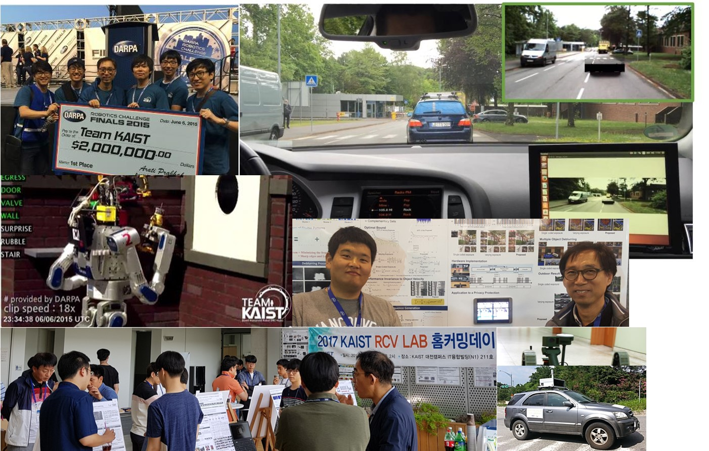
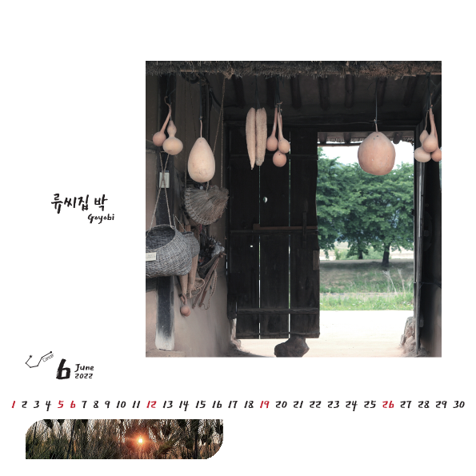
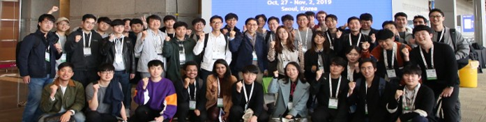

"잘 키운 로봇 하나, 열 자식 안 부러운 세상을 꿈꿉니다."
KIST 국가특임연구원 | KAIST 명예교수
로봇이 현실 환경을 인식하고 스스로 판단하여 행동하는 지능형 로봇 기술을 연구합니다. 차세대 휴머노이드 KAPEX 개발을 이끌고 있습니다.
전 세계적으로 수만 회 인용된 CBAM 알고리즘 등 시각 지능 분야의 혁신을 주도하며 인공지능의 '눈'을 만듭니다.
보이차는 단순한 음료를 넘어 나눔의 철학입니다. 상처 난 찻잎이 발효를 거쳐 깊은 맛을 내듯, 인내와 실천을 통해 완성되는 삶의 가치를 제자들과 함께 나눕니다.

매일 아침 책을 펼쳐 영감을 얻습니다. 『생각의 탄생』을 비롯한 80여 권의 인문학 서적은 과학적 통찰의 밑거름이 됩니다.

